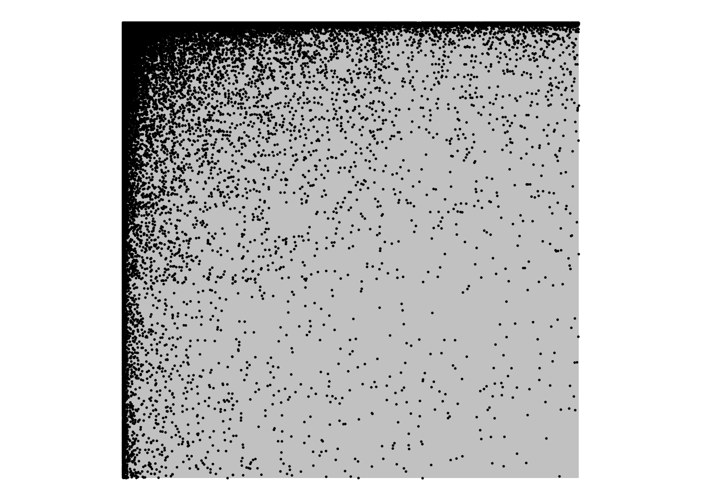

ngram Language Models
I’m going to split up the “ngram model” materials into explaining how they work in principle, vs the how we have to make engineering decisions to make them work in reality.
Language Prediction
When we are perceiving language, we are constantly and in real-time making predictions about what we are about to hear next. While we’re going to be talking about this in terms of predicting the next word, It’s been shown that we do this even partway through a word (Allopenna, Magnuson, and Tanenhaus 1998).
So, let’s say I spoke this much of a sentence to you:
I could tell he was angry from the tone of his___
And then a sudden noise obscured the final word, and you only caught part of it. Which of the following three words was I probably trying to say?
- boys
- choice
- voice
Your ability to guess which word it was is based on your i) experience with English turns of phrase and ii) the information in the context.
One goal of Language Models is to assign probabilities across the vocabulary for what the next word will be, and hopefully assign higher probabilities to the “correct” answer than the “incorrect” answer. Applications for this kind of prediction range from speech-to-text (which could suffer from a very similar circumstance as the fictional one above) to autocomplete or spellcheck.
Using context (ngrams)
In the example sentence above, one way we could go about trying to predict which word is most likely is to count up how many times the phrase “I could tell he was angry from the tone of his___” is finished by the candidate words. Here’s a table of google hits for the three possible phrases, as well as all hits for just the context phrase.
| “I could tell he was angry from the tone of his” | count |
|---|---|
| boys | 0 |
| choice | 0 |
| voice | 3 |
| “I could tell he was angry from the tone of his” | 3 |
We’re going to start diving into mathematical formulas now (fortunately the numbers are easy right now).
To represent the count of a word or string of words in a corpus. We’ll use \(C(\text{word})\). So given the table above we have
\[ \displaylines{C(\text{I could tell he was angry from the tone of his})=3\\ C(\text{I could tell he was angry from the tone of his boys})=0\\ C(\text{I could tell he was angry from the tone of his choice})=0\\ C(\text{I could tell he was angry from the tone of his voice})=3} \]
To describe the probability that the next word is “choice” given that we’ve already heard “I could tell he was angry from the tone of his”, we’ll use the notation \(P(\text{choice} | \text{I could tell he was angry from the tone of his})\). To calculate that probability, we’ll divide the total count of the whole phrase by the count of the preceding context.
\[ P(\text{choice} | \text{I could tell he was angry from the tone of his}) = \frac{C(\text{I could tell he was angry by the tone of his choice})}{C(\text{I could tell he was angry by the tone of his})} = \frac{0}{3} = 0 \]
In fact, we can estimate the probability of an entire sentence with the Probability Chain Rule. The probability of a sequence of events like \(P(X_1X_2X_3)\) can be estimated by multiplying out their conditional probabilities like so:
\[ P(X_1X_2X_3) = P(X_1)P(X_2|X_1)P(X_3|X_1X_2) \]
Or, to use a phrase as an example:1
\[ P(\text{du hast mich gefragt})=P(\text{du})P(\text{hast}|\text{du})P(\text{mich}|\text{du hast})P(\text{gefragt}|\text{du hast mich}) \]
Data Sparsity rears its head
The problem with data sparsity rears its head, though. As we can already see in the table above, long phrases, although possible, might not appear in any corpus, giving us a very unreliable probability estimate.
Instead of using the whole history, we can use a smaller context in a more strictly defined window. So, instead of looking at the whole sentence, what if we looked at counts of just “of his” from the example sentence.
| “of his” | count (in millions) |
|---|---|
| boys | 2.2 |
| choice | 14.2 |
| voice | 44.5 |
| “of his” | 2,400.0 |
\[ \displaylines{ P(\text{boys} | \text{of his}) = \frac{C(\text{of his boys)}}{C(\text{of his})}=\frac{2.2}{2400} = 0.0009\\ P({\text{choice}|\text{of his}})= \frac{C(\text{of his choice)}}{C(\text{of his})}=\frac{14.2}{2400} = 0.005\\ P({\text{voice}|\text{of his}})= \frac{C(\text{of his voice)}}{C(\text{of his})}=\frac{44.5}{2400} = 0.018} \]
The continuation “voice” here is still relatively low probability, but has the highest probability of our candidate set.
This is the basic approach of an ngram model. Instead of using all available words to calculate the probability of the next word, we’ll approximate it with a smaller window. The example in the table above is a “trigram” model.
- unigram:
-
Counting up every individual (1) word, and try to estimate the probability of word in isolation.
- bigram:
-
Count up every sequence of two words, and try to estimate the probability of a word given just one word before it,
- trigram
-
Count up every sequence of three words, and try to estimate the probability of a word given just the two words before it.
“Trigrams” are the last n-gram with a special name. The rest are just called “4-gram” or “5-gram”.
Building up a bigram model
Let’s look at what happens as we gradually build up a bigram model we’ll start with one sentence.
I saw the dog
I saw the dog
We saw a dog
I saw the dog
We saw a dog
I read a book
I saw the dog
We saw a dog
I read a book
I saw a book
I saw a dog
The probability of a sentence
Another way to visualize the final state diagram from above is with a matrix, with the “from” words along the rows and the “to” words along the columns.
| words | a | book | dog | END | I | read | saw | the | We |
|---|---|---|---|---|---|---|---|---|---|
| a | 0 | 0.5 | 0.5 | 0 | 0 | 0 | 0 | 0 | 0 |
| book | 0 | 0 | 0 | 1 | 0 | 0 | 0 | 0 | 0 |
| dog | 0 | 0 | 0 | 1 | 0 | 0 | 0 | 0 | 0 |
| I | 0 | 0 | 0 | 0 | 0 | 0.25 | 0.75 | 0 | 0 |
| read | 1 | 0 | 0 | 0 | 0 | 0 | 0 | 0 | 0 |
| saw | 0.75 | 0 | 0 | 0 | 0 | 0 | 0 | 0.25 | 0 |
| START | 0 | 0 | 0 | 0 | 0.8 | 0 | 0 | 0 | 0.2 |
| the | 0 | 0 | 1 | 0 | 0 | 0 | 0 | 0 | 0 |
| We | 0 | 0 | 0 | 0 | 0 | 0 | 1 | 0 | 0 |
There is a non-zero number for every arrow in the state diagram. Every 0 value in the table represents a possible bigram that wasn’t observed (so, no arrow in the diagram).
Given these bigram probabilities we estimated from the corpus and our assumption that we can approximate the probability of whole sentences with smaller ngram probabilities, we can estimate the probability of a new sentence like so:
- We saw the dog.
P(We | <START>) \(\times\) P(saw | We) \(\times\) P(the | saw) \(\times\) P(dog | saw) \(\times\) P(<END> | dog)
| words | a | book | dog | END | I | read | saw | the | We |
|---|---|---|---|---|---|---|---|---|---|
| a | 0 | 0.5 | 0.5 | 0 | 0 | 0 | 0 | 0 | 0 |
| book | 0 | 0 | 0 | 1 | 0 | 0 | 0 | 0 | 0 |
| dog | 0 | 0 | 0 | 1 | 0 | 0 | 0 | 0 | 0 |
| I | 0 | 0 | 0 | 0 | 0 | 0.25 | 0.75 | 0 | 0 |
| read | 1 | 0 | 0 | 0 | 0 | 0 | 0 | 0 | 0 |
| saw | 0.75 | 0 | 0 | 0 | 0 | 0 | 0 | 0.25 | 0 |
| START | 0 | 0 | 0 | 0 | 0.8 | 0 | 0 | 0 | 0.2 |
| the | 0 | 0 | 1 | 0 | 0 | 0 | 0 | 0 | 0 |
| We | 0 | 0 | 0 | 0 | 0 | 0 | 1 | 0 | 0 |
We can re-write the probability formula above like so:
\[ P(s) = \prod_{i=1}^n P(w_i|w_{i-1}) \]
We can also plug in the probabilities of these bigrams into the formula to get our estimated probility of the sentence.
\[ P(s) = 0.2 \times 1 \times 1\times 0.25 \times 1 = 0.05 \]
Once you start multiplying probabilities, you’re going to get smaller and smaller numbers.
| this | equals | |
|---|---|---|
| 0.5 | = | 0.500 |
| 0.5 × 0.5 | = | 0.250 |
| 0.5 × 0.5 × 0.5 | = | 0.125 |
| 0.5 × 0.5 × 0.5 × 0.5 | = | 0.062 |
| 0.5 × 0.5 × 0.5 × 0.5 × 0.5 | = | 0.031 |
Even one very small probability (which you’ll get sometimes) can start sending the overall estimate into infintesimally small numbers close to 0, which computers may not be able to represent.
So, it’s also common to see the log-probability (a.k.a. the log-likelihood, in this case) being calculated instead. The way logarithms work, you add together values that you would have multiplied in the probability space.
\[ \log(P(\text{We saw the dog}))=\log(P(\text{We | <START>})) + \log(P(\text{saw | We}))+\dots \]
\[ \log(P(s)) = \sum_{i=1}^n \log(P(w_i|w_{i-1})) \]
\[ \log(P(s)) = -1.609438 + 0 + 0 + -1.386294 + 0 = -2.995732 \]
Larger ngrams
Language models that take a larger window of adjacent words (3, or 4 grams) work in the same way, and are more “accurate” but are harder to visualize.
| prev | a | book | dog | END | read | saw | the |
|---|---|---|---|---|---|---|---|
| a_a | 0 | 0 | 0 | 0 | 0 | 0 | 0 |
| a_book | 0 | 0 | 0 | 1 | 0 | 0 | 0 |
| a_dog | 0 | 0 | 0 | 1 | 0 | 0 | 0 |
| a_I | 0 | 0 | 0 | 0 | 0 | 0 | 0 |
| a_read | 0 | 0 | 0 | 0 | 0 | 0 | 0 |
| a_saw | 0 | 0 | 0 | 0 | 0 | 0 | 0 |
| a_the | 0 | 0 | 0 | 0 | 0 | 0 | 0 |
| a_We | 0 | 0 | 0 | 0 | 0 | 0 | 0 |
| I_a | 0 | 0 | 0 | 0 | 0 | 0 | 0 |
| I_book | 0 | 0 | 0 | 0 | 0 | 0 | 0 |
| I_dog | 0 | 0 | 0 | 0 | 0 | 0 | 0 |
| I_I | 0 | 0 | 0 | 0 | 0 | 0 | 0 |
| I_read | 1 | 0 | 0 | 0 | 0 | 0 | 0 |
| I_saw | 0.666666666666667 | 0 | 0 | 0 | 0 | 0 | 0.333333333333333 |
| I_the | 0 | 0 | 0 | 0 | 0 | 0 | 0 |
| I_We | 0 | 0 | 0 | 0 | 0 | 0 | 0 |
| read_a | 0 | 1 | 0 | 0 | 0 | 0 | 0 |
| read_book | 0 | 0 | 0 | 0 | 0 | 0 | 0 |
| read_dog | 0 | 0 | 0 | 0 | 0 | 0 | 0 |
| read_I | 0 | 0 | 0 | 0 | 0 | 0 | 0 |
| read_read | 0 | 0 | 0 | 0 | 0 | 0 | 0 |
| read_saw | 0 | 0 | 0 | 0 | 0 | 0 | 0 |
| read_the | 0 | 0 | 0 | 0 | 0 | 0 | 0 |
| read_We | 0 | 0 | 0 | 0 | 0 | 0 | 0 |
| saw_a | 0 | 0.333333333333333 | 0.666666666666667 | 0 | 0 | 0 | 0 |
| saw_book | 0 | 0 | 0 | 0 | 0 | 0 | 0 |
| saw_dog | 0 | 0 | 0 | 0 | 0 | 0 | 0 |
| saw_I | 0 | 0 | 0 | 0 | 0 | 0 | 0 |
| saw_read | 0 | 0 | 0 | 0 | 0 | 0 | 0 |
| saw_saw | 0 | 0 | 0 | 0 | 0 | 0 | 0 |
| saw_the | 0 | 0 | 1 | 0 | 0 | 0 | 0 |
| saw_We | 0 | 0 | 0 | 0 | 0 | 0 | 0 |
| START_a | 0 | 0 | 0 | 0 | 0 | 0 | 0 |
| START_book | 0 | 0 | 0 | 0 | 0 | 0 | 0 |
| START_dog | 0 | 0 | 0 | 0 | 0 | 0 | 0 |
| START_I | 0 | 0 | 0 | 0 | 0.25 | 0.75 | 0 |
| START_read | 0 | 0 | 0 | 0 | 0 | 0 | 0 |
| START_saw | 0 | 0 | 0 | 0 | 0 | 0 | 0 |
| START_the | 0 | 0 | 0 | 0 | 0 | 0 | 0 |
| START_We | 0 | 0 | 0 | 0 | 0 | 1 | 0 |
| the_a | 0 | 0 | 0 | 0 | 0 | 0 | 0 |
| the_book | 0 | 0 | 0 | 0 | 0 | 0 | 0 |
| the_dog | 0 | 0 | 0 | 1 | 0 | 0 | 0 |
| the_I | 0 | 0 | 0 | 0 | 0 | 0 | 0 |
| the_read | 0 | 0 | 0 | 0 | 0 | 0 | 0 |
| the_saw | 0 | 0 | 0 | 0 | 0 | 0 | 0 |
| the_the | 0 | 0 | 0 | 0 | 0 | 0 | 0 |
| the_We | 0 | 0 | 0 | 0 | 0 | 0 | 0 |
| We_a | 0 | 0 | 0 | 0 | 0 | 0 | 0 |
| We_book | 0 | 0 | 0 | 0 | 0 | 0 | 0 |
| We_dog | 0 | 0 | 0 | 0 | 0 | 0 | 0 |
| We_I | 0 | 0 | 0 | 0 | 0 | 0 | 0 |
| We_read | 0 | 0 | 0 | 0 | 0 | 0 | 0 |
| We_saw | 1 | 0 | 0 | 0 | 0 | 0 | 0 |
| We_the | 0 | 0 | 0 | 0 | 0 | 0 | 0 |
| We_We | 0 | 0 | 0 | 0 | 0 | 0 | 0 |
Generating text
Once we’ve estimated all of these transition probabilities, we can turn them around to generate text, if we want. Let’s take the final bigram “model” we had from before:
If we start at <START> and roll some dice, there’s a 80% chance we’ll move to I and a 20% chance we’ll move to We.
<START>= 26
We= 67
saw= 67
a= 67
dog= 23
<END>
Our bigram model on our boring corpus generates boring results. But here’s the output of a tigram model estimated over Frankenstein.
Details
The version of the data I’m working with here hasn’t been sentence-ized (so no <START> or <BEGIN> tags), and has also had punctuation stripped out (see function here). So after estimating the trigram probabilities, seed the generator by sampling over all trigrams, then progress by sampling over the distribution of \(P(w_i|w_{i-2}w_{i-1})\).
Trigram R Code
frank %>%
select(word) %>%
mutate(nextw1 = lead(word),
nextw2 = lead(word, n = 2)) %>%
group_by(word, nextw1) %>%
mutate(n_tot = n()) %>%
group_by(word, nextw1, nextw2) %>%
mutate(n = n(),
p = n/n_tot) %>%
summarise(p = mean(p),
n = n())%>%
ungroup()->trigramgenerator R Code
#set.seed(517)
generate_frankenstein <- function(trigram, n = 100){
trigram %>%
mutate(all_p = n/sum(n)) %>%
sample_n(size = 1, weight = all_p)->init_df
init_vec <- c(init_df$word, init_df$nextw1, init_df$nextw2)
for(i in seq(n)){
hist = rev(rev(init_vec)[1:2])
trigram %>%
filter(word == hist[1],
nextw1 == hist[2]) %>%
sample_n(size = 1, weight = p) %>%
pull(nextw2) -> new_w
init_vec <- c(init_vec, new_w)
}
return(str_c(init_vec, collapse = " "))
}
cat(paste0("> ", generate_frankenstein(trigram, n = 100)))morning the moon was just rising from the trees or cut in stone that guided me and above all as belonging to a hell of intense tortures such as even dante could not sacrifice the whole kind but where is he why m clerval i was impatient to arrive at great proficiency in that study is certainly unlawful that is to assure as far as others have gone tracing a secure way over the chairs clapped my hands before my eyes which obliged me to heaven for nothing contributes so much time spent in observing my friends dread a dangerous relapse alas why
Sparsity, again
The rectangle represents a matrix, with the y-axis representing “from” words and the x-axis representing “to” words in Frankenstein. There could be a point in any location in the rectangle, representing a time that word \(w_n\) followed word \(w_{n-1}\). Each point represents a cell in that matrix where any data was observed.

References
Footnotes
Credit here to Kyle Gorman for introducing me to this example.↩︎